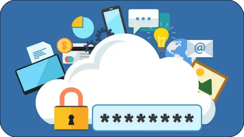

Используйте уникальные пароли
Пароли к вашей онлайн-карте и к банковским профилям должны быть уникальными и надежными, чтобы хакеры не смогли получить доступ сразу к нескольким учетным записям, используя одни и те же учетные данные.
Выберите одну кредитную карту, с которой вы будете совершать все онлайн-покупки. Так вы будете подвергать себя меньшему риску, чем при использовании нескольких карт, и вам будет легче проверять подозрительные списания. Некоторые банки даже предлагают специальные карты для онлайн-расчетов. Настройте уведомления через СМС или по электронной почте о каждой покупке с вашего счета. Когда возможно, при совершении онлайн-платежей не создавайте учетных записей, в которых сохраняются данные о вашей кредитной карте.
Выберите одну кредитную карту, с которой вы будете совершать все онлайн-покупки. Так вы будете подвергать себя меньшему риску, чем при использовании нескольких карт.
Спросите у своего банка, предоставляет ли он сервис виртуальных номеров. При этом сервисе для каждой онлайн-транзакции создается разовый виртуальный номер карты. Таким образом, при оплате вы не раскрываете реальный номер вашей кредитной карты, и при этом временный номер остается привязанным к вашей учетной записи для совершения покупок. Если данные о вашем виртуальном номере попадут в руки хакеров, то они не смогут получить доступ к номеру вашей реальной банковской карты.
Попросите свой банк предоставить вам для каждой онлайн-транзакции разовый виртуальный номер карты. Таким образом, при оплате вы не раскрываете реальный номер вашей кредитной карты, и при этом временный номер остается привязанным к вашей учетной записи для совершения покупок.
Пароли к вашей онлайн-карте и к банковским профилям должны быть уникальными и надежными, чтобы хакеры не смогли получить доступ сразу к нескольким учетным записям, используя одни и те же учетные данные. В общем случае, надежный пароль должен быть длинным, содержать как прописные, так и строчные буквы, а также цифры и символы (если это разрешено). Можно использовать в качестве пароля фразу или целое предложение, заменяя при этом отдельные слова условными знаками, например заменяя "to" цифрой два, а слово "and" — знаком амперсанда. Используйте фразы, которые вы не забудете, но при этом не используйте в паролях личную информацию. Не записывайте пароли.
Пароли к вашей онлайн-карте и к банковским профилям должны быть уникальными и надежными, чтобы хакеры не смогли получить доступ сразу к нескольким учетным записям, используя одни и те же учетные данные.
Делайте покупки у компаний, которые вам знакомы. Если веб-сайт вам незнаком, изучите информацию о нем. Обратите внимание на дизайн сайта; если он выглядит странно или непрофессионально, поищите желаемый продукт в другом месте. Существует множество сайтов с хорошей репутацией, на которых вы сможете сделать покупки.
Делайте покупки у компаний, которые вам знакомы. Если веб-сайт вам незнаком, изучите информацию о нем. Обратите внимание на дизайн сайта; если он выглядит странно или непрофессионально, поищите желаемый продукт в другом месте.
Как обезопасить себя от КРАЖИ денег с банковских карт? Вы можете узнать подробнее перейдя по кнопке снизу
Перейти в источник